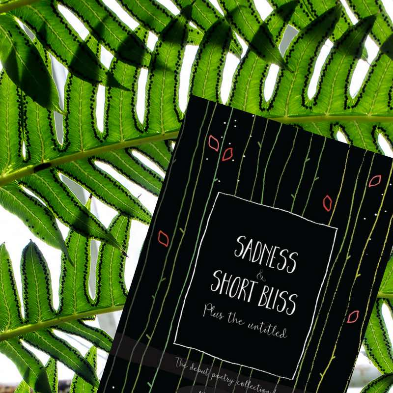

I'm Kyomi...
A fan of marketing, travel, writing and life. Learn more about these three areas of my life by journeying through this site.
{% for navop in page.navops %}
 {% endfor %}
{% endfor %}
{{ navop.intro }}

Sadness and Short Bliss
Sadness and Short Bliss is the debut poetry collection by Kyomi Wade out now. 51 poems spanning 7+ years, exploring the thoughts of a pensive young woman, growing up, falling in love, mourning loss, assigning emotions and making sense of the world.